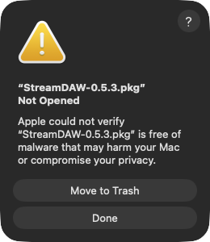
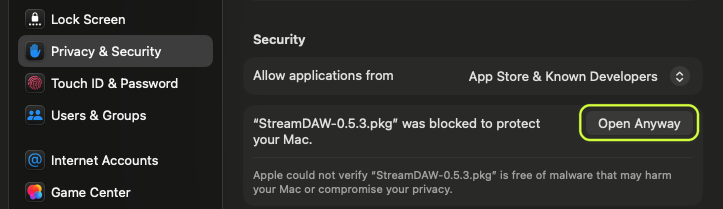

Install
Install StreamDAW.
StreamDAW is downloading. Follow the steps below while it does. Didn't start? Download again
About five minutes, once. The first time, macOS asks you to allow StreamDAW, because Apple hasn't notarized it yet. Here is every screen you'll see, and what to press.
Why macOS asks.
Apple notarizes software from developers in its paid developer programme. StreamDAW is new and made by a small studio, and we'll join once enough of you use it. Until then macOS can't vouch for the installer, so it asks you to confirm it yourself.
The installer puts these on your Mac, and nothing else:
- The StreamDAW app
/Applications - The plug-in, Audio Units and VST3
/Library/Audio/Plug-Ins - StreamDAW Audio, the audio device your DAW sends stems to
/Library/Audio/Plug-Ins/HAL
It also removes older copies of StreamDAW. Nothing starts when you log in. Download it only from snowstar.company.
-
Download.
Get StreamDAW from the StreamDAW page (free, with a Snowstar account) or from the link in your purchase email. One file lands in your Downloads folder: StreamDAW-0.7.x.pkg.
-
Open the installer.
Quit your DAW first. Then double-click the .pkg file. macOS answers with this:

Screenshot · macOS Tahoe 26 On macOS Sequoia 15 it says the same, with the two buttons side by side. Click Done. Not Move to Trash: that throws the file away.
-
Allow it, once.
Open the Apple menu › System Settings › Privacy & Security and scroll down to Security. Next to “StreamDAW-0.7.x.pkg” was blocked to protect your Mac, click Open Anyway.

Screenshot · macOS Tahoe 26 The green ring is ours. The button stays there for about an hour after you try to open the file. Gone? Double-click the .pkg again. Type your Mac's login password (or use Touch ID). macOS asks one more time: click Open. It remembers your answer for this file.
-
Install.
The installer opens with a short welcome: click Continue. It shows the parts it will put on your Mac. Keep them all ticked, click Install and type your password. At the end Core Audio restarts, so sound stops for about a second. When it offers to move the installer to the Trash, either answer is fine.
-
Open StreamDAW.
Open your DAW, rescan plug-ins if it asks, put StreamDAW on your master bus and press Go live. The StreamDAW app opens by itself (it's in Applications too). macOS checked the installer in step 03, so it shouldn't ask about the app again. If it ever does, allow it the same way.

This is the StreamDAW app's icon, in Applications and in your Dock while it runs.
-
Say yes to what you use.
StreamDAW asks for each permission the first time it needs it, and never before. Click Allow. Here is why each one is asked:
- Microphone
- When StreamDAW first opens. Your DAW's stems reach StreamDAW through StreamDAW Audio, which macOS counts as a microphone: without this, every stem is silent. It's also your own mic, when you talk to your listeners.
- Camera
- When you switch your camera on (Pro). Your listeners see you only while it's on.
- Screen
- When you share a window or a screen (Pro). macOS shows its own picker and you choose exactly which window. If it also asks about Screen & System Audio Recording, allow it.
- System audio
- When you play another app into your stream (Pro). Spotify or Music, for example. macOS calls it System Audio Recording Only. StreamDAW takes the sound of the app you pick, and only that app.
Said no by mistake? System Settings › Privacy & Security › Microphone (or Camera, or Screen & System Audio Recording), then switch StreamDAW on. After an update macOS may ask again: click Allow again.
That's it.
Bought Pro? Next, unlock your Mac: it takes a minute. Stuck on any step? Write to hello@snowstar.company with a screenshot of what you see.